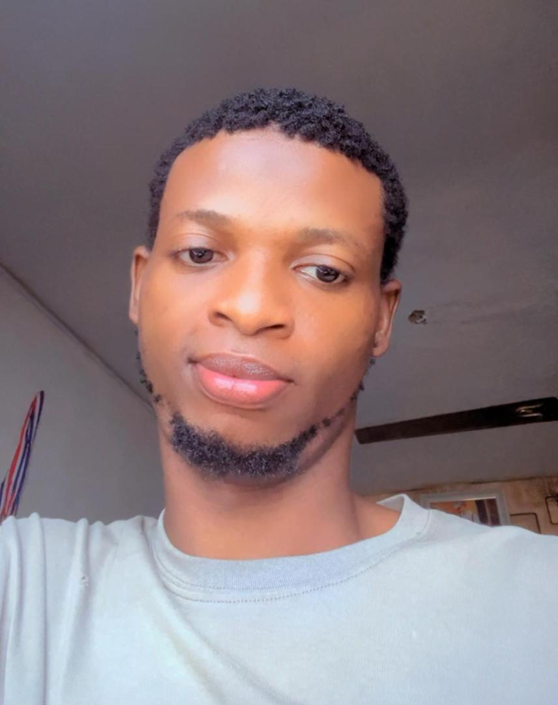
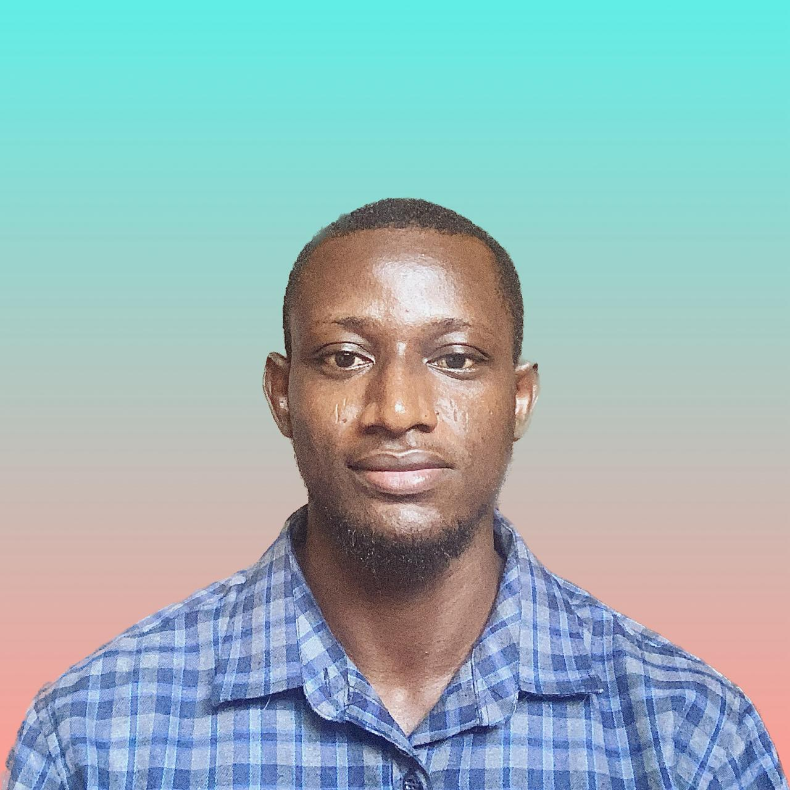

About Me
A diligent and industrious tech savvy person. A highly organized and efficient hardworking individual
whose thorough and precise approach to projects has yielded excellent results. A team motivator with
self-motivated spirit and genuine inquisitiveness.
Education
Diploma/National Diploma/Higher National Diploma
HND in Computer Engineering
The, Polytechnic Ibadan - Ibadan
May 2021 to August 2023
OND in Computer Engineering
The, Polytechnic Ibadan - Ibadan
May 2017 to November 2019
Diploma in Computer Engineer
BAFUTO INSTITUTE OF MANAGEMENT AND INFORMATION TECHNOLOGY - Lagos
January 2013 to February 2014
Work Experience
Computer Engineering/ Operator
Rich Cafe Institute-Lagos
August 2014 to June 2015
IT Support Technician
KC Gaming Network (BET9JA)-Lagos
November 2015 to February 2017
I.T Support & Logistics
FutureMinds Development Initiative-Ibadan
January 2020 to July 2020
Skills
Intermediate knowledge in Data Analytics(Python, NumPy, Pandas And Excel
Proficiency in Microsoft Suite, including, Microsoft Word and Powerpoint
Operating system,hardware,software,networking and Troubleshooting
Excellent level of computer Usage
Customer service
Organizational skills
Communication skills
Goal oriented and technical problem solving ability
Good inter-personal relationship and leadership skills
Personal Interests
I enjoy reading non-fiction books, building computer networks, solving puzzles and socialising with
friends and family I enjoy reading and learning about the tech industry and learning new things.
My passions are Problem solving, continuous learning, helping others, analytical thinking, innovation,
customer's satisfaction
Gallery

